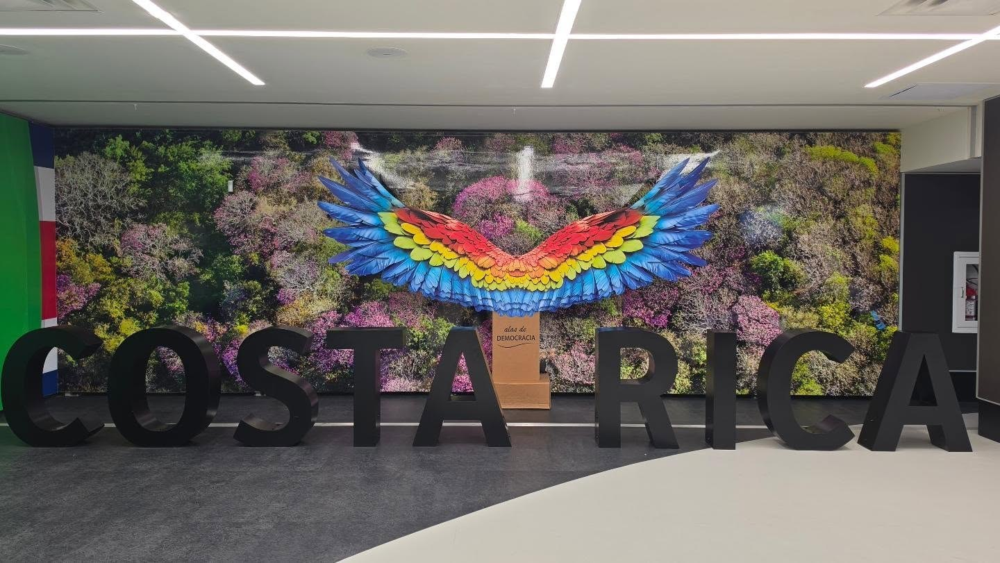
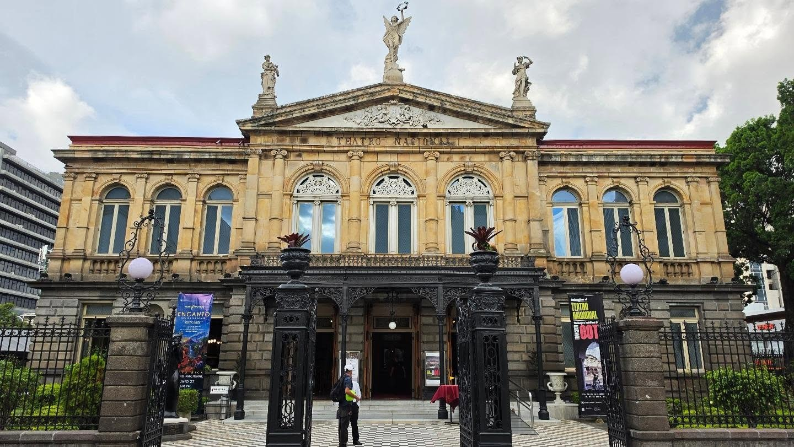
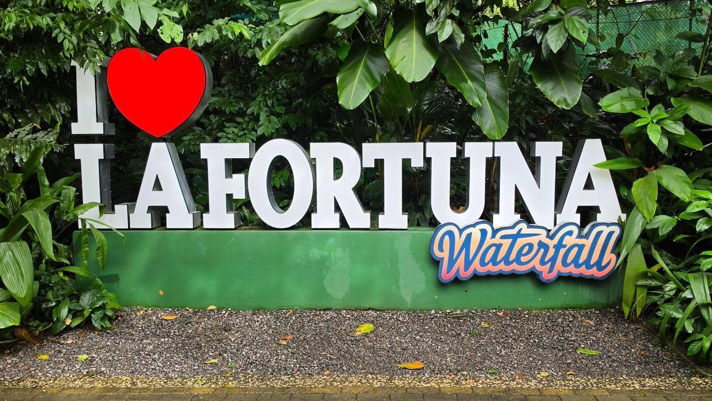
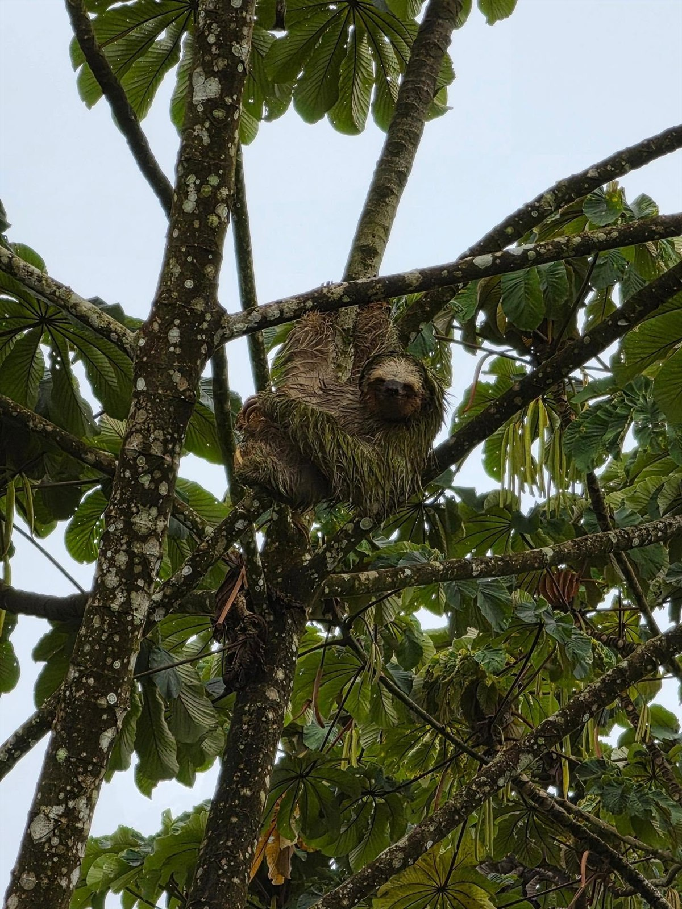
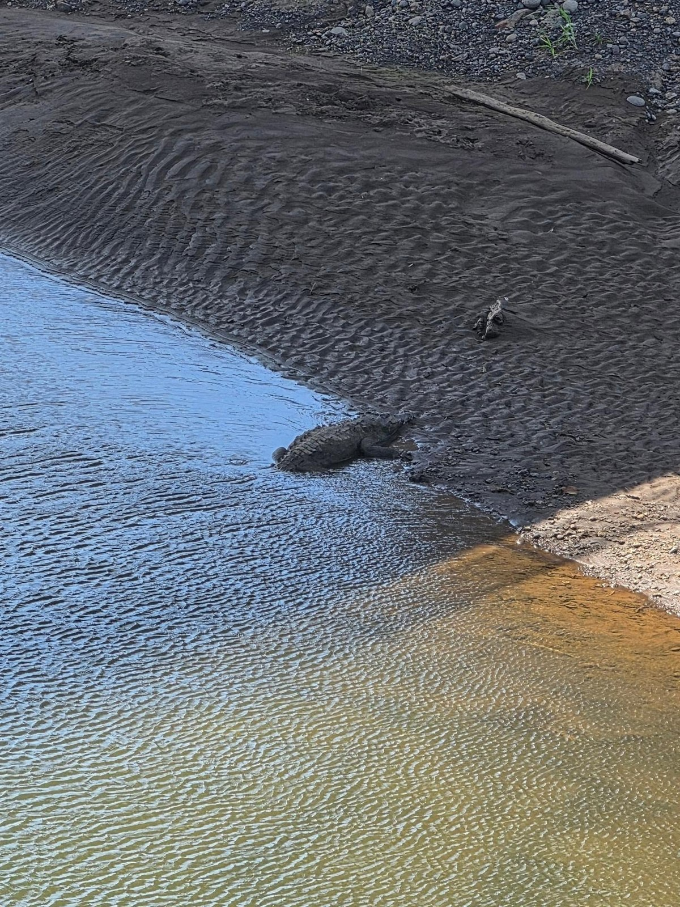
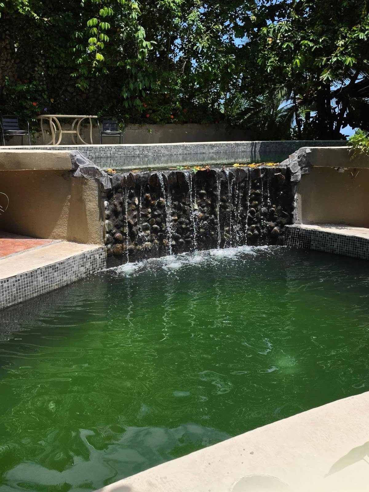
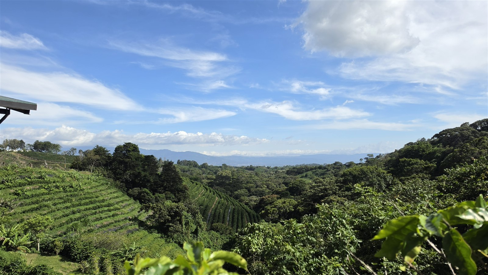
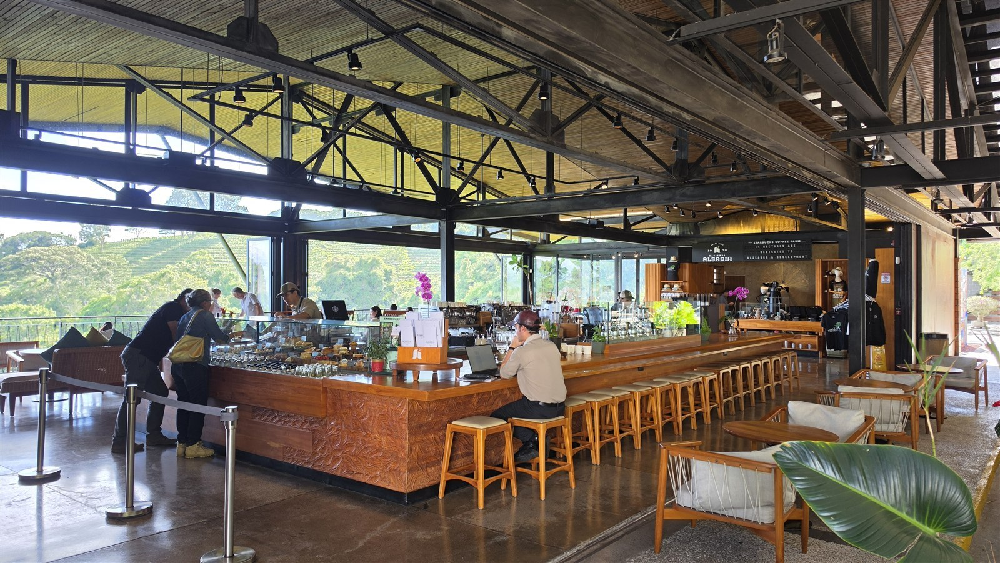

<meta charset="utf-8">
<title>코스타리카 4박 5일 루트 — 산호세·아레날·마누엘 안토니오 — 나의 투자 그리고 행복한 여행</title>
<meta name="description" content="코스타리카 4박 5일 실제 루트. 산호세-라포르투나 셔틀 3~4시간, 라포르투나-마누엘안토니오 5~6시간. 마누엘 안토니오 국립공원은 현장 판매 없이 사전예약 필수, 화요일 휴장입니다.">
<meta name="viewport" content="width=device-width, initial-scale=1">
<link rel="canonical" href="https://danielmoon82.github.io/moon/posts/costarica-route-2026-09-12.html">
<link rel="preconnect" href="https://fonts.googleapis.com">
<link rel="preconnect" href="https://fonts.gstatic.com" crossorigin>
<link rel="stylesheet" href="https://fonts.googleapis.com/css2?family=Hahmlet:wght@400;600;800&family=IBM+Plex+Mono:wght@400;500&family=IBM+Plex+Sans+KR:wght@300;400;500;600&display=swap">

<style>
  :root{
    --paper:#F2EEE6;--surface:#FAF8F3;--surface-2:#E7E1D5;
    --ink:#191510;--ink-2:#4A4235;--ink-3:#7D7364;
    --line:#D6CEBF;--line-soft:#E4DDD0;--accent:#B06A15;--accent-bright:#C2761A;
    --up:#E5484D;--down:#3B82F6;
    --f-display:"Hahmlet",'Nanum Myeongjo',"Apple SD Gothic Neo",serif;
    --f-body:"IBM Plex Sans KR","Apple SD Gothic Neo","Malgun Gothic",sans-serif;
    --f-mono:"IBM Plex Mono","SFMono-Regular",Consolas,monospace;
    --pad:clamp(20px,5vw,64px);
  }
  @media (prefers-color-scheme:dark){
    :root:not([data-theme="light"]){
      --paper:#0B1120;--surface:#121A2C;--surface-2:#1A2439;
      --ink:#E9EEF7;--ink-2:#A9B5C9;--ink-3:#72809A;
      --line:#26314A;--line-soft:#1D2739;--accent:#E8A33D;--accent-bright:#F0B45C;
    }
  }
  *{box-sizing:border-box;}
  body{margin:0;background:var(--paper);color:var(--ink);font-family:var(--f-body);
    font-weight:300;font-size:1rem;line-height:1.75;-webkit-font-smoothing:antialiased;}
  a{color:inherit;}
  img{max-width:100%;height:auto;}
  .wrap{max-width:760px;margin:0 auto;padding-inline:var(--pad);}
  .nav{position:sticky;top:0;z-index:20;background:color-mix(in srgb,var(--paper) 88%,transparent);
    backdrop-filter:saturate(180%) blur(12px);border-bottom:1px solid var(--line);}
  .nav-in{display:flex;align-items:center;justify-content:space-between;height:58px;}
  .brand{font-family:var(--f-display);font-weight:600;font-size:1rem;letter-spacing:-.02em;text-decoration:none;}
  .back{font-family:var(--f-mono);font-size:.72rem;color:var(--ink-3);text-decoration:none;}
  .article{padding-block:clamp(40px,7vw,72px) clamp(56px,9vw,96px);}
  .eyebrow{font-family:var(--f-mono);font-size:.68rem;letter-spacing:.16em;text-transform:uppercase;
    color:var(--accent);margin:0 0 14px;}
  h1{font-family:var(--f-display);font-weight:800;font-size:clamp(1.6rem,4.4vw,2.3rem);
    line-height:1.3;letter-spacing:-.03em;margin:0 0 16px;}
  .byline{font-family:var(--f-mono);font-size:.72rem;color:var(--ink-3);
    padding-bottom:24px;border-bottom:1px solid var(--line);margin-bottom:32px;}
  h2{font-family:var(--f-display);font-weight:600;font-size:1.25rem;letter-spacing:-.02em;margin:42px 0 14px;}
  h3{font-family:var(--f-display);font-weight:600;font-size:1.05rem;letter-spacing:-.02em;
    margin:30px 0 10px;padding-top:14px;border-top:1px solid var(--line-soft);}
  h3 .code{font-family:var(--f-mono);font-size:.7rem;font-weight:400;color:var(--ink-3);margin-left:6px;}
  p{margin:0 0 18px;color:var(--ink-2);}
  ul.checks{margin:0 0 18px;padding-left:20px;color:var(--ink-2);}
  ul.checks li{margin-bottom:8px;font-size:.94rem;}
  table{width:100%;border-collapse:collapse;font-size:.88rem;margin-bottom:8px;}
  th{font-family:var(--f-mono);font-size:.66rem;letter-spacing:.06em;text-transform:uppercase;
    color:var(--ink-3);text-align:right;padding:8px 6px;border-bottom:1px solid var(--line);}
  th:first-child{text-align:left;}
  td{padding:10px 6px;border-bottom:1px solid var(--line-soft);color:var(--ink-2);}
  td.num{font-family:var(--f-mono);text-align:right;font-variant-numeric:tabular-nums;}
  td.up{color:var(--up);} td.down{color:var(--down);}
  .scroll{overflow-x:auto;}
  figure{margin:22px 0;}
  figure img{display:block;border-radius:3px;background:var(--surface-2);}
  figcaption{margin-top:8px;font-family:var(--f-mono);font-size:.68rem;color:var(--ink-3);text-align:center;}
  .note{margin-top:34px;padding:16px 18px;border-left:3px solid var(--accent);
    background:var(--surface);border-radius:0 3px 3px 0;}
  .note p{margin:0;font-size:.85rem;color:var(--ink-3);}
  .foot{border-top:1px solid var(--line);background:var(--surface);padding-block:30px 38px;}
  .foot p{margin:0;font-size:.8rem;color:var(--ink-3);}
</style>

<nav class="nav">
  <div class="wrap nav-in">
    <a class="brand" href="../index.html">나의 투자 그리고 행복한 여행</a>
    <a class="back" href="../index.html#stocks">← 시황으로</a>
  </div>
</nav>

<main class="wrap article">
  <p class="eyebrow">Market</p>
  <h1>코스타리카 4박 5일 루트 기록 — 구간별 이동 시간과 예약 정보</h1>
  <p class="byline">여행 · 2026-09-12 기준</p>

  <p>한 줄 요약: 2026년 6월 26일부터 30일까지 산호세 → 라 포르투나(아레날) → 마누엘 안토니오 → 알라후엘라 순으로 돈 기록입니다.</p>
  <p>날짜와 장소는 당시 기록에서 확인한 것이고, 구간 이동 시간과 요금은 2026년 9월 기준으로 따로 확인해 붙였습니다.</p>
  <p>마누엘 안토니오의 사전예약 의무와 휴장일, 라 포르투나 폭포의 계단 구조 등 일정에 영향을 주는 항목을 정리했습니다.</p>
  <p>각 지점의 상세 기록은 별도 글로 나눠 두었습니다.</p>
  <h2>전체 루트 한눈에 보기</h2>
  <p>실제로 이 순서로 움직였습니다. 괄호 안은 구간 이동에 걸리는 시간입니다.</p>
  <ul class="checks">
    <li>6월 26일  산호세 도착 — 공항, 국립극장</li>
    <li>6월 27일  기록 없음 — 산호세 → 라 포르투나 이동일로 보입니다 (셔틀 3~4시간)</li>
    <li>6월 28일  라 포르투나 — 아레날 화산, 라 포르투나 폭포</li>
    <li>6월 29일  마누엘 안토니오 — 에스파디야 해변 (라 포르투나에서 5~6시간)</li>
    <li>6월 30일  알라후엘라 — 커피 농장, 산호세 공항 방면</li>
  </ul>
  <p>코스타리카 여행에서 가장 흔한 조합이 이 세 곳입니다. 수도, 화산, 해변을 하나씩 넣는 구성입니다.</p>
  <div class="note"><p>핵심은 마지막 날입니다. 마누엘 안토니오에서 바로 공항으로 가면 2시간 반~3시간이 걸리는데, 알라후엘라에 하루를 두면 공항이 코앞이라 출국이 편합니다.</p></div>
  <h2>1일차 — 산호세, 길게 머물 이유는 없습니다</h2>
  <figure><figcaption>산호세 공항의 COSTA RICA 조형물. 마코앵무 날개 조형에 alas de DEMOCRACIA라고 적혀 있습니다</figcaption></figure>
  <figure><figcaption>산호세 국립극장. 시내 중심에 있는 대표 건축물입니다</figcaption></figure>
  <p>산호세는 대부분 거쳐 가는 도시입니다. 국제선이 여기로 들어오고, 지방으로 가는 셔틀도 여기서 출발합니다.</p>
  <p>시내에서 볼 만한 것은 국립극장과 그 주변입니다. 반나절이면 충분합니다.</p>
  <p>**산호세에 이틀 이상 두는 일정은 권하지 않습니다.** 코스타리카의 볼거리는 대부분 지방에 있습니다.</p>
  <p>도착일에는 시차와 이동 피로가 겹치니 시내에서 하루 자고 다음 날 아침 셔틀을 타는 편이 낫습니다.</p>
  <h2>2일차 — 산호세에서 라 포르투나로</h2>
  <p>이 구간은 공유 셔틀이 가장 무난합니다. 2026년 9월 기준 정보입니다.</p>
  <ul class="checks">
    <li>공유 셔틀 요금 — 1인 $44~57 수준 (업체·시간대에 따라 다름)</li>
    <li>소요 시간 — 3~4시간</li>
    <li>출발 시간 — 오전 8시 전후, 오후 편도 있음</li>
    <li>픽업 — 산호세 시내 호텔 또는 공항</li>
  </ul>
  <p>렌터카도 많이 씁니다. 다만 산길 구간이 있고 우기에는 노면이 젖어 있어 야간 운전은 피하는 편이 좋습니다.</p>
  <p>아침 편을 타면 점심 무렵 라 포르투나에 닿습니다. 그날 오후를 온천이나 마을 산책에 쓸 수 있습니다.</p>
  <h2>3일차 — 라 포르투나, 폭포와 화산</h2>
  <figure><figcaption>라 포르투나 폭포 입구 표지판</figcaption></figure>
  <p>라 포르투나는 아레날 화산 아래 작은 마을입니다. 여기서 폭포, 화산 트레킹, 온천, 행잉브리지를 다 소화할 수 있습니다.</p>
  <p>**라 포르투나 폭포 입장료는 2026년 기준 외국인 8세 이상 $20입니다.** 자료에 따라 $18로 안내되는 곳도 있습니다. 거주자는 $10, 8세 미만은 무료입니다.</p>
  <p>매일 07:00~17:00 열고 주차는 무료입니다.</p>
  <div class="note"><p>여기서 미리 알아야 할 것 하나. 폭포까지 내려가는 길이 **600m 계단**입니다. 내려갈 때는 괜찮은데 올라올 때가 문제입니다.</p></div>
  <p>무릎이 약하거나 더위에 약하면 오전 일찍 가는 게 낫습니다. 우기에는 오후에 비가 자주 옵니다.</p>
  <h2>나무늘보는 생각보다 자주 보입니다</h2>
  <figure><figcaption>나무 위의 세발가락나무늘보. 맨눈으로는 잎사귀와 구분이 잘 안 됩니다</figcaption></figure>
  <p>아레날 일대에서 나무늘보를 볼 수 있습니다. 사진처럼 높은 나무 위에 매달려 있어서, 가이드가 짚어주기 전에는 찾기 어렵습니다.</p>
  <p>망원 기능이 있는 카메라나 휴대폰이 있으면 도움이 됩니다. 맨눈으로는 그냥 나뭇잎 뭉치로 보입니다.</p>
  <p>야생동물은 보장되는 게 아닙니다. 같은 곳에 가도 못 보는 날이 있습니다.</p>
  <h2>4일차 — 마누엘 안토니오, 여기가 가장 조심할 곳입니다</h2>
  <figure><figcaption>이동 중 강가에서 본 악어. 코스타리카 태평양 쪽 강에서는 드물지 않습니다</figcaption></figure>
  <p>라 포르투나에서 마누엘 안토니오까지는 **약 220km, 차로 5~6시간**입니다. 코스타리카 일정에서 가장 긴 구간 중 하나입니다.</p>
  <p>이 구간 중간에 타르콜레스 강 다리가 있습니다. 다리 위에서 아래를 보면 큰 악어들이 모여 있는 것으로 유명한 곳입니다.</p>
  <p>위 사진의 정확한 촬영 위치는 기록이 남아 있지 않습니다. 다만 이 지역 강가에서 악어를 보는 건 특별한 일이 아닙니다.</p>
  <h2>마누엘 안토니오 국립공원 — 예약 없이 가면 못 들어갑니다</h2>
  <p>이 글에서 가장 중요한 부분입니다. 다른 후기에서 잘 강조되지 않는데, 모르고 가면 일정이 통째로 어긋납니다.</p>
  <ul class="checks">
    <li>**입장권을 매표소에서 팔지 않습니다.** SINAC 공식 온라인 플랫폼에서 미리 사야 합니다</li>
    <li>**화요일 휴장**입니다. 수요일부터 월요일까지 07:00~16:00 운영합니다</li>
    <li>입장료 — 성인(13세 이상) $18, 어린이(2~12세) $5, 2세 미만 무료</li>
    <li>인원 제한이 있어 성수기에는 원하는 날짜가 일찍 마감됩니다</li>
  </ul>
  <div class="note"><p>다섯 시간을 달려갔는데 화요일이거나 예약이 없으면 입구에서 돌아서야 합니다. 숙소를 잡기 전에 공원 예약부터 잡는 게 순서입니다.</p></div>
  <p>공원에 못 들어가도 마을 쪽 에스파디야 해변은 갈 수 있습니다. 공원 안 해변과는 다른 곳이고 입장료가 없습니다.</p>
  <figure><figcaption>숙소 수영장. 이 지역 숙소는 대부분 이런 형태로 수영장을 갖추고 있습니다</figcaption></figure>
  <p>마누엘 안토니오는 숙소가 해변 마을과 언덕에 흩어져 있습니다. 언덕 쪽은 전망이 좋지만 해변까지 걸어가기 어려운 곳도 있어 위치를 확인하는 게 좋습니다.</p>
  <h2>5일차 — 알라후엘라, 공항 옆에서 마무리</h2>
  <figure><figcaption>고도 1,400m 커피 농장의 전망. 비탈이 전부 커피밭입니다</figcaption></figure>
  <figure><figcaption>농장 카페. 한쪽 벽이 열려 있어 앉은 자리에서 커피밭이 보입니다</figcaption></figure>
  <p>마지막 날은 알라후엘라에 두었습니다. 산호세 국제공항이 실제로는 알라후엘라에 있어서, 여기 묵으면 출국이 편합니다.</p>
  <p>이 근처에 포아스 화산과 커피 농장이 있습니다. 출국 전 반나절에 넣기 좋은 위치입니다.</p>
  <p>스타벅스가 직접 소유한 커피 농장 아센다 알사시아가 여기 있습니다. 방문자 센터와 카페는 예약 없이 들어갈 수 있고, 90분 가이드 투어는 따로 예약해야 합니다.</p>
  <div style="text-align:center;margin:30px 0"><a href="https://danielmoon82.github.io/moon/posts/alsacia-starbucks-farm-2026-09-12.html" target="_blank" rel="nofollow sponsored noopener" style="display:inline-block;padding:15px 28px;background:#E34948;color:#fff;font-weight:700;font-size:18px;text-decoration:none;border-radius:8px"><b>▶ 아센다 알사시아 방문 기록 자세히 보기</b></a></div>
  <h2>이 루트에서 배운 것 — 이동 시간이 일정을 결정합니다</h2>
  <p>코스타리카 일정을 짜면서 가장 많이 하는 실수가 욕심입니다. 지도에서 가까워 보여서 하루에 두 곳을 넣습니다.</p>
  <p>실제 구간 시간을 늘어놓으면 이렇습니다.</p>
  <ul class="checks">
    <li>산호세 → 라 포르투나 — 3~4시간</li>
    <li>라 포르투나 → 마누엘 안토니오 — 5~6시간 (220km)</li>
    <li>마누엘 안토니오 → 산호세 공항 — 2시간 반~3시간</li>
  </ul>
  <p>이동일에는 다른 일정을 넣지 못합니다. 4박 5일에서 순수 이동에 하루 반이 들어갑니다.</p>
  <p>그래서 이런 기준이 나옵니다.</p>
  <div class="note"><p>3박이면 두 곳, 4박이면 세 곳. 5박 이상이어야 몬테베르데나 카리브 쪽까지 넣을 수 있습니다.</p></div>
  <p>그리고 마지막 숙박은 공항 근처인 알라후엘라에 두는 편이 안전합니다. 해변에서 새벽에 출발해 공항으로 달리는 일정은 비행기를 놓칠 위험이 있습니다.</p>
  <h2>6월에 가면 — 우기입니다</h2>
  <ul class="checks">
    <li>6월은 우기 초입입니다. 산호세 기준 낮 25~27도, 밤 16~18도</li>
    <li>하루 종일 오는 비가 아니라 오후에 소나기가 쏟아지는 형태가 많습니다</li>
    <li>그래서 주요 일정은 오전에 배치하는 게 좋습니다</li>
    <li>우기 초입은 관광객이 적고 초목이 가장 푸릅니다</li>
    <li>얇은 우비나 방수 재킷, 빨리 마르는 옷이 유용합니다</li>
    <li>고지대(아레날, 커피 농장)는 해안보다 서늘합니다. 겉옷이 필요합니다</li>
  </ul>
  <h2>이런 분께 맞는 루트입니다</h2>
  <p>맞는 경우입니다.</p>
  <ul class="checks">
    <li>코스타리카가 처음이고 대표적인 곳을 한 번에 보고 싶은 경우</li>
    <li>화산과 해변을 한 일정에 넣고 싶은 경우</li>
    <li>4~5박 정도의 일정인 경우</li>
  </ul>
  <p>안 맞는 경우입니다.</p>
  <ul class="checks">
    <li>3박 이하 — 이동에 시간을 다 씁니다. 두 곳으로 줄이는 편이 낫습니다</li>
    <li>차멀미가 심한 경우 — 산길 구간이 길고 굽이가 많습니다</li>
    <li>몬테베르데 운무림까지 넣고 싶은 경우 — 최소 6박은 잡아야 합니다</li>
  </ul>
  <h2>자주 묻는 질문</h2>
  <p>**코스타리카 며칠이면 되나요?**</p>
  <p>수도·화산·해변을 한 번씩 보려면 최소 4박입니다. 이동에만 하루 반이 들어가기 때문입니다. 3박이면 두 곳으로 줄이는 게 낫습니다.</p>
  <p>**마누엘 안토니오 국립공원은 현장에서 표를 살 수 있나요?**</p>
  <p>없습니다. SINAC 공식 온라인 플랫폼에서 사전 예약해야 하고 매표소 판매가 없습니다. 화요일은 휴장이니 일정에서 화요일을 피해야 합니다.</p>
  <p>**라 포르투나 폭포는 힘든가요?**</p>
  <p>입구에서 폭포까지 600m 계단을 내려갔다 올라와야 합니다. 내려가는 것보다 올라오는 게 힘듭니다. 더운 시간대를 피해 오전에 가는 편이 낫습니다.</p>
  <p>**렌터카와 셔틀 중 뭐가 낫나요?**</p>
  <p>일정이 세 곳 이하면 공유 셔틀이 편합니다. 산호세-라포르투나 구간이 1인 $44~57 수준입니다. 여러 곳을 자유롭게 다닐 계획이면 렌터카가 유리하지만, 우기 야간 운전은 피하는 게 좋습니다.</p>
  <p>**우기에 가도 괜찮나요?**</p>
  <p>6월은 우기 초입이라 오후 소나기 위주입니다. 오전에 일정을 몰면 큰 지장은 없습니다. 사람이 적고 풍경이 푸르다는 장점이 있습니다.</p>
  <h2>정리하면</h2>
  <p>코스타리카는 작은 나라지만 이동이 깁니다. 이게 일정의 전부를 결정합니다.</p>
  <p>산호세는 거쳐 가는 곳으로 두고, 화산과 해변에 각각 하루씩 온전히 쓰고, 마지막 밤은 공항 근처에 두는 것. 이 뼈대만 잡으면 나머지는 채우기 쉽습니다.</p>
  <p>그리고 마누엘 안토니오 국립공원은 숙소보다 먼저 예약하시기 바랍니다. 현장 판매가 없고 화요일은 닫습니다.</p>
  <p style="font-size:12px;color:#999;line-height:1.6;margin-top:36px">이 글의 날짜와 방문 장소는 2026년 6월 26~30일 기록을 바탕으로 했습니다. 요금·운영시간·이동시간은 2026년 9월에 확인한 공개 정보로, 업체와 시기에 따라 달라질 수 있습니다. 특히 국립공원 예약 정책과 휴장일은 변경되는 경우가 있으니 방문 전 SINAC 공식 사이트에서 다시 확인하시기 바랍니다.</p>
</main>

<footer class="foot">
  <div class="wrap"><p>나의 투자 그리고 행복한 여행 · 투자 판단의 참고 자료일 뿐, 매수·매도를 권유하지 않습니다.</p></div>
</footer>
